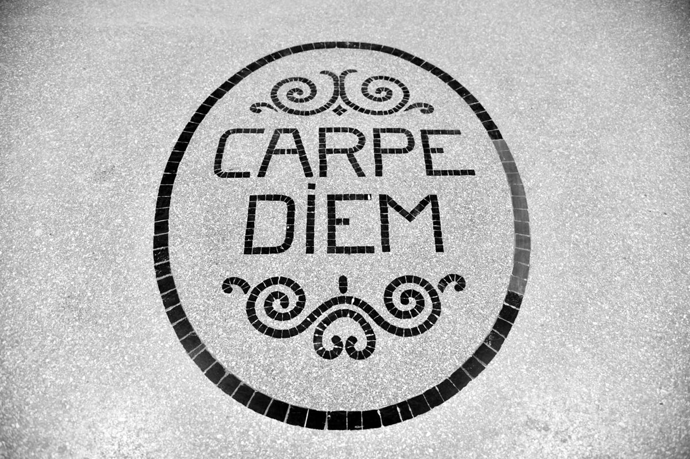

Förderverein des Oskar-von-Miller-Gymnasiums
Wir unterstützen unsere Schule.
Seit 1991 fördern die Freunde des OvMG e.V. Bildung und Erziehung am Oskar-von-Miller-Gymnasium in München – mit Mitgliedsbeiträgen und Spenden.
- seit 1991für das OvMG im Einsatz
- ab 10 €im Jahr Mitglied werden
- gemeinnützigBeiträge und Spenden absetzbar
Über uns
Was der Schuletat nicht schafft, machen wir möglich.
Die Freunde des OvMG e.V. sind der Förderverein des Oskar-von-Miller-Gymnasiums in München – des früheren Alten Realgymnasiums. Seit 1991 unterstützen wir Schülerinnen, Schüler und Lehrkräfte ideell und materiell: dort, wo der Schuletat nicht ausreicht.
Der Verein ist als gemeinnützig anerkannt. Mitgliedsbeiträge und Spenden sind steuerlich absetzbar.

Mitglied werden
Dabei sein ab 10 € im Jahr
- Jahresbeitrag30 €
- Schüler, Studierende, Auszubildende10 €
- Beitrittserklärung ausfüllenund im Sekretariat abgeben oder per Post schicken.
- Bestätigung erhaltenmit Ihrer persönlichen Mitgliedsnummer.
- Steuerlich absetzen– die Zuwendungsbestätigung kommt zu Jahresbeginn.
Spenden
Jede Spende kommt direkt an.
- Empfänger
- Freunde des OvMG e.V.
- IBAN
- DE69 7015 0000 0111 1418 18
- BIC
- SSKMDEMM
- Bank
- Stadtsparkasse München

Kontakt
Fragen zur Mitgliedschaft, zu Spenden oder eine Idee für ein Projekt? Schreiben Sie uns.
Vorstand
- Christian J. Hartmann1. Vorsitzender
- Dr. Stephan Ring2. Vorsitzender
- Moritz PöllathKassenführung
Anschrift
Freunde des OvMG e.V.
c/o Oskar-von-Miller-Gymnasium
Siegfriedstraße 22
80803 München